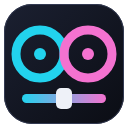

AirDeck is ready
Turn any two YouTube tabs into DJ decks. Three steps, no account, nothing to set up.
-
1
Load Deck A
Open a YouTube video and press Alt+Shift+1. Or click the AirDeck icon in the toolbar and choose Deck A.
-
2
Load Deck B
Open a second video in another tab and press Alt+Shift+2. The Mixer tab opens by itself.
-
3
Mix
Press play, tap Sync on Deck B, then hit the big Mix button. Tap Bass or Vocals to switch parts off.
Everything runs on your computer. AirDeck never downloads or saves YouTube audio; it only mixes what is already playing in your tabs.